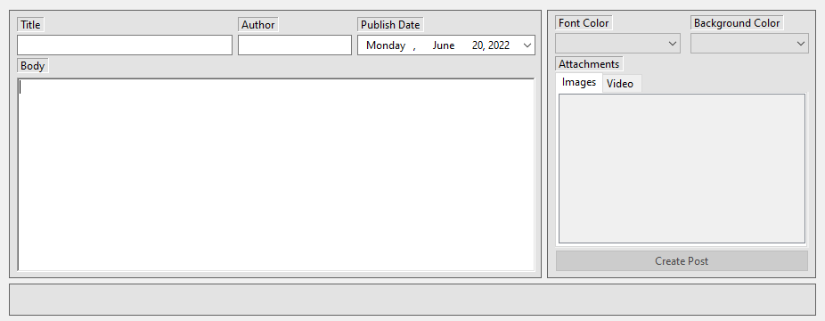

In this project I was tasked with creating a CMS system for my blog. CMS stands for "Content Management System," and would be used to very easily add new blog posts without having to manually edit the HTML.
The goal would to have a page dedicated to an easily fillable form that the blog owner could enter text and information into. The CMS would then, utilizing JavaScript, create a new HTML page with the user input, and add the page to my main blog site.
The project is still in progress, however for now I have a rough functioning example of how it should work created using WindowsForms.
